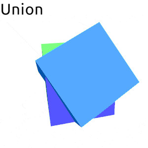
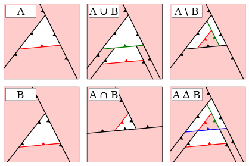

Procedural graphics generation is one of these things that I've always had deep interest in and is often on my mind, yet somehow I couldn't really find much time to play with. Be it life getting in the way or sometimes simply my easily distractable nature - when I look at the contents of my hard drive all I can find is some sparsely scattered experiments in that field.
One thing that I did find, however, was an implementation of a polyhedral set operations algorithm. It was something that I've quickly put together only up to a point where I've had something that looked right, after which I've promptly lost interest and moved to some other project. It didn't make any claims on the correctness of the implementation and there definitely weren't any attempts to make it optimal or even benchmark it. As such I have decided to revive it now and meld it into a neat little library. Hopefully it will become a building step into some bigger framework for procedural content creation, and even on its own it could be useful in the context of man made objects like for example architecture. And so this post is an in depth overview of the current implementation of that algorithm, generalized to work on any polytopes, hopefully correct and definitely much more optimal.
 
Frankly I was planning to write this post as a sort of tutorial, an overview of an algorithm and walk trough of a full implementation. However as I continued with different experiments and optimizations and general exploration of the solution space I kept pushing this writeup day by day forward... Finally I've came to a conclusion that it would be better to just write down what I have now and perhaps later write down follow-ups, otherwise it will never end. So anyway, here it is.
While rereading draft of this post I decided that some code snippets where unnecessary convoluted. Not without a reason of course, but it would be a shame to overtly complicate things, whilst making it hard for a reader to follow the general idea of an algorithm. That's why I decided to simplify, within the bounds of reason, some parts of the code here in comparison to the actual implementation. Frankly I should have probably be much more radical in that process and perhaps even monomorphize it all to make it easier to read for people less familiar with Haskell but I didn't have time for that, so it is what it is. The actual source is available on github.
A word about the structure of this post: We will start with basic building blocks needed in the latter parts i.e planes and points together with predicates and operations on them. We will follow by facets and facet splitting/clipping. Next we will introduce two approaches to the actual SetOp algorithm. We will end with a word about boundary representation and some concluding discussion about higher dimensional use cases, possible optimizations etc.
Finally before we start, a note about language: I'm going to use a 3 dimensional terminology to mean the n-dimensional equivalent concepts because it's a bit of a pain to constantly have to qualify everything with "hyper", "n-dimensional" and what not. That is for example, I'll say "plane" whether I'm talking about 2d plane (line) or a n-dimensional hyper-plane.
We will represent a plane in the general form that is as a tuple of a vector \(V\) and offset \(d\) (equal to the length of \(V\) multiplied by the distance of the plane from the origin), where a point \(P\) is located on that plane iff it satisfies the equation:
\[ \sum_{i=1}^{n}V_iP_i + d = 0 \]
data Plane v n = Plane
{ planeVector :: v n
, planeOffset :: n
}To flip a plane we negate all coefficients:
flipPlane :: (Functor v, Num n) => Plane v n -> Plane v n
flipPlane (Plane vs d) = Plane (fmap negate vs) (negate d)Two planes are parallel if their directional vectors are collinear. That is if one is some scalar multiple of the other. In 2d the area of a parallelogram spanning two vectors is exactly the definition of a determinant of a 2x2 matrix with these vectors as bases. If we take two vectors \(V(x,y)\) and \(V'\) and assume that \(V' = \lambda V\) we have:
\[ \begin{vmatrix} x & \lambda x \\ y & \lambda y \\ \end{vmatrix} = (x \lambda y) - (\lambda xy) = 0 \\ \]
That is two vectors are collinear when that determinant is equal zero. Now we can generalize this to n dimensions by preforming that test for all 2-combinations of components:
collinear :: (Foldable v, Num n, EqZero n) => v n -> v n -> Bool
collinear v w = all f $ combinations 2 $ zipWith (,) v w
where
f [(a, b), (c, d)] = eqZero $ a*d - b*c
f _ = False -- To silence exhaustiveness checkerAlternatively we could represent our planes in Hessian normal form (a normal \(\hat{N}\) and a distance from origin \(p\)). Then the planes are parallel iff the absolute value of a dot product between normals is equal to 1.
\[|\hat{N}_1\cdotp\hat{N}_2| = 1\]
However that would take us out of \(\mathbb{Q}\) and also is less numerically stable though I guess it could be a performance win (especially in higher dimensions). Actually I was thinking about writing this code polymorphic in the representation of a plane (among other things) but I digress.
Let's now continue with testing for coincidence of two planes. One thing we should notice is that general form is basically Hessian normal form scaled by some \(s\) forall \(s\) not equal \(0\) \((s\hat{N},sp)\). Testing for coincidence in Hessian form requires only comparing if \(\hat{N}_1p_1 = \hat{N}_2p_2\). Now in general form if we divide both planes by \(s_1\) and assign \(\lambda = s_1/s_2\) we can see that planes are coincident if the two vectors made up from all n+1 coefficients are collinear. Or alternatively - if we already know that the planes are parallel - if \(V_1d_2 = V_2d_1\).
coincidence :: (Foldable v, Num n, EqZero n) => Plane v n -> Plane v n -> Bool
coincidence (Plane v1 d1) (Plane v2 d2) = all f $ zipWith (,) v1 v2
where
f (x1, x2) = eqZero $ x1*d2 - x2*d1To test co-orientation the corresponding coefficients should have the same sign, that is their multiple should be grater or equal 0.
coorientation :: (Foldable v, Num n, EqZero n) => Plane v n -> Plane v n -> Bool
coorientation (Plane v1 d1) (Plane v2 d2)
= all geqZero $ d1*d2 : zipWith (*) v1 v2These last two functions are dependent on the planes being parallel so, finally, let's make that dependence explicit.
data PlanesRelation = Parallel Incidence Orientation | Crossing
data Incidence = CoIncident | NonIncident
data Orientation = CoOriented | AntiOriented
planesRelation :: (Foldable v, Num n, EqZero n)
=> Plane v n -> Plane v n -> PlanesRelation
planesRelation p1@(Plane v1 d1) p2@(Plane v2 d2)
| collinear v1 v2 = Parallel incidence orientation
| otherwise = Crossing
where
incidence = bool NonIncident CoIncident $ coincidence p1 p2
orientation = bool AntiOriented CoOriented $ coorientation p1 p2data Sign = M | Z | P
data CrossPoint v n = CP
{ orientation :: Plane v n -> Sign
, getPoint :: Point v n
}CrossPoint is a helpful little type that I guess you could call a "premature optimization". When merging BSPs there will be new points created in places where splitting plane crosses edges between points (by solving the system of linear equations made from these planes). To know if a plane crosses between points we will need to relate them, and we can do that using a predicate of form (here in 3 dimensions but it generalizes):
\[ \begin{vmatrix} p_a & p_b & p_c \\ q_a & q_b & q_c \\ r_a & r_b & r_c \\ \end{vmatrix} * \begin{vmatrix} p_a & p_b & p_c & p_d \\ q_a & q_b & q_c & q_d \\ r_a & r_b & r_c & r_d \\ s_a & s_b & s_c & s_d \\ \end{vmatrix} \]
Where \(p, q, r\) are the three planes that make the point and \(s\) is the plane that we relate to (\(a, b, c\) and \(d\) are plane coefficients). We then represent that predicate as a closure to get some wins due to sharing and partial evaluation. I haven't really done any benchmarking here (that's why I called it "premature optimization") but it feels right. Though I'll probably have to look into it in the future and perhaps rewrite it with a simple Gaussian elimination straight up if it happens to be faster in the end.
Now when you have a point turning it into a CrossPoint is straightforward:
toCrossPoint :: (Foldable v, Num n, Ord n, EqZero n)
=> Point v n -> CrossPoint v n
toCrossPoint pt = CP orient pt
where
orient (Plane v d) = toSign . sum $ d : zipWith (*) v pt
toSign :: (Ord n, Num n, EqZero n) => n -> Sign
toSign x
| eqZero x = Z
| x < 0 = M
| otherwise = PThe exciting part is making a CrossPoint from a vector of planes. We calculate the big determinant via Laplace expansion sharing all intermediate results and calculate the orientation using the aforementioned predicate. However we can also notice that the intermediate determinants for minors (\(d_0..d_3\)) are just stone throw away from solving for the point via Cramer's rule (sans some sign correction due to column permutation) so we do just that. Frankly when I first thought of this I felt really clever, however now that I look at this it doesn't really seem like we gain much from this. As I said it might just be better to simply solve for the point with the Gaussian elimination straight up and drop all of this CrossPoint business. Plus writing this solution for arbitrary \(n\) optimally will probably be much harder. There are also possible improvements to be made in terms of numerical stability, something that's discussed in [SHE97] but I've decided not to worry about that just yet.
class MakeCrossPoint v n where
makeCrossPoint :: v (Plane v n) -> Maybe (CrossPoint v n)
instance (Fractional n, Ord n, EqZero n) => MakeCrossPoint V3 n where
makeCrossPoint planes
| eqZero d3 = Nothing
| otherwise = Just $ CP orient solved
where
V3 (Plane (V3 a b c) d)
(Plane (V3 e f g) h)
(Plane (V3 i j k) l) = planes
orient (Plane (V3 m n o) p) = toSign $ -d3*(m*d0 - n*d1 + o*d2 - p*d3)
d0 = k*m1 - j*m0 + l*m2
d1 = k*m3 - i*m0 + l*m4
d2 = j*m3 - i*m1 + l*m5
d3 = i*m2 - j*m4 + k*m5
m0 = c*h - d*g
m1 = b*h - d*f
m2 = c*f - b*g
m3 = a*h - d*e
m4 = c*e - a*g
m5 = b*e - a*f
dd = 1/d3
solved = Point.P $ V3 (-dd*d0) (dd*d1) (-dd*d2)Now that I look at it the \(d_0..d_3\) determinants (with appropriate signs) are (I believe) coordinates of that point in the homogeneous coordinates system and that would probably be a much better representation for the CrossPoint then the current one with the closure. Especially if we would like to reimplement it in the context of GPGPU in the future.
We will represent a facet in n dimensions as a plane and a boundary graph with nodes being CrossPoints and edges n-2 edge planes (n-1 counting the base plane). However since such robust solution is a bit cumbersome for smaller dimensions, we will make Facet parametric in the boundary representation, with pair of CrossPoints as a boundary in 2d (edge points of a line) and list (or rather loop) of CrossPoint and leading Plane pairs, bounding the facet polygon in 3d.
data Facet b v n = Facet
{ facetPlane :: Plane v n
, facetBoundary :: b v n
}
type FB2 v n = (CrossPoint v n, CrossPoint v n)
type FB3 v n = [(CrossPoint v n, Plane v n)]Next we have one of the fundamental parts of the whole algorithm the facet splitting function (and class). We will actually call the class Clip (clipping and splitting are corresponding operations so frankly it doesn't matter and I like that name better).
class Clip b v n where
clipFacet :: Plane v n -- ^ Clipping plane
-> Facet b v n -- ^ Facet to clip
-> Maybe (Facet b v n)
splitFacet :: Plane v n -- ^ Splitting plane
-> Facet b v n -- ^ Facet to split
-> (Maybe (Facet b v n), Maybe (Facet b v n))
clipFacet p f = fst $ splitFacet p f
splitFacet p f = (clipFacet p f, clipFacet (flipPlane p) f)
{-# MINIMAL (clipFacet | splitFacet) #-}Implementation for 2d is not particularly elaborate: if orientations of edge points relative to the splitting plane \(h\) are opposite, we create new point by crossing the facet plane \(s\) with the splitting plane \(h\) and distribute the newly created facets in the tuple (positive to the left, negative to the right). For only positive (or negative) case with one edge being possibly zero we return the whole facet on that side. The final Z Z case is redundant because it is handled by the splitCoincident combinator that for faces coincident with the splitting plane returns them on the side with the same orientation:
instance (MakeCrossPoint v n, Vec2 v, Foldable v, Num n, EqZero n)
=> Clip FB2 v n where
splitFacet h f@(Facet s (a, b)) = splitCoincident h f othercase
where
mc = makeCrossPoint $ vec2 h s
go x y = Just $ Facet s (x, y)
othercase = table (orientation a h) (orientation b h)
table P M = (mc >>= \c -> go a c, mc >>= \c -> go c b)
table M P = (mc >>= \c -> go c b, mc >>= \c -> go a c)
table P _ = (Just f, Nothing)
table _ P = (Just f, Nothing)
table M _ = (Nothing, Just f)
table _ M = (Nothing, Just f)
-- This last case is not needed and is only here for completeness.
-- It could happen if someone wrongly created a facet with edge
-- points not lying on the facet plane (line). In such case, that
-- facet is simply discarded by the splitting function.
table Z Z = (Nothing, Nothing)
splitCoincident :: (Foldable v, Num n, EqZero n)
=> Plane v n -> Facet b v n
-> (Maybe (Facet b v n), Maybe (Facet b v n))
-> (Maybe (Facet b v n), Maybe (Facet b v n))
splitCoincident h f@(Facet s _) othercase = case planesRelation h s of
Parallel CoIncident CoOriented -> (Just f, Nothing)
Parallel CoIncident AntiOriented -> (Nothing, Just f)
_ -> othercaseSplitting a 3d facet is a bit more meticulous, that's why I'm going to present here a slightly simplified version based on clipping: First we handle the coincident case with the splitCoincident and all positive (negative) with some possible zeros cases similarly how we did it in the 2d case. Whats left is a case where the splitting plane goes through the facet. For that we clip the boundary twice with signs flipped for the minus side with the clipFast function that I'll explain next.
instance (MakeCrossPoint v n, Vec3 v, Foldable v, Num n, EqZero n)
=> Clip (FB2 v n) v n where
splitFacet h f@(Facet s ps) = splitCoincident h f othercase
where
othercase
| all (\x -> x == P || x == Z) sP = (Just f, Nothing)
| all (\x -> x == M || x == Z) sM = (Nothing, Just f)
| otherwise = (go sP, go sM)
go sS = mkFacet $ clipFast mkP h sS ps
mkFacet ops@(_:_:_:_) = Just $ Facet s ops
mkFacet _ = Nothing
mkP v = makeCrossPoint $ vec3 s h v
(sP, sM) = unzip $ map (toPM . flip orientation h . fst) ps
toPM P = (P, M)
toPM M = (M, P)
toPM Z = (Z, Z)The diagram above outlines all nine cases that we have to handle in the clipFast function. However - since we are using that function in the context where the boundary actually needs clipping - we can simplify that to just five cases as shown in the table expression below. We then just pipe all point-plane pairs through it to get the resulting clipped boundary:
clipFast
:: (p -> Maybe c) -- ^ Make CrossPoint from Plane V
-> p -- ^ Clipping Plane H
-> [Sign] -- ^ Points signs relative to H
-> [(c, p)] -- ^ Boundary
-> [(c, p)] -- ^ Resulting boundary
clipFast mkP h signs points = foldr (.) id out []
where
out = zipWith3 table points signs (drop 1 $ cycle signs)
table (_, v) M P = mkC v v
table _ M _ = id
table (p, _) Z M = ((p,h):)
table pv@(_, v) P M = (pv:) . mkC v h
table pv _ _ = (pv:)
mkC v f = case mkP v of
Nothing -> id
Just c -> ((c, f):)BSP - structure at the core of this algorithm - a binary tree with planes at nodes partitioning the space and green/red colored leaves marking inside/outside of the enveloped volume.
data BinaryTree l n
= Node (BinaryTree l n) !n (BinaryTree l n)
| Leaf !l
data LeafColor = Green | Red
type BSP = BinaryTree LeafColor
pattern In = Leaf Green
pattern Out = Leaf Red
swapColor :: LeafColor -> LeafColor
swapColor Green = Red
swapColor Red = Green
-- Complementary set
cmp :: BSP a -> BSP a
cmp = first swapColorTo construct BSP from a list of facets we will take the first facet and partition the rest by its plane, then repeat that process recursively for all sub-nodes. For the non internal planes we will arbitrary decide that the positive, internal half-space will be on the left and the negative, external half-space on the right:
constructBSP :: Clip b v n => [Facet b v n] -> BSP (Plane v n)
constructBSP [] = Out
constructBSP ((Facet s _):fs) = case splitWith (splitFacet s) fs of
([], rs) -> Node In s (constructBSP rs)
(ls, []) -> Node (constructBSP ls) s Out
(ls, rs) -> Node (constructBSP ls) s (constructBSP rs)
splitWith :: (a -> (Maybe a, Maybe a)) -> [a] -> ([a], [a])
splitWith f = over each catMaybes . unzip . map fAssuming our facets form a well balanced tree, constructBSP should have \(O(nlog_2n)\) complexity. However most of the time we won't be dealing with such nice and well behaved tree. For example if the facets represent a boundary of a convex polytope a tree formed by it will be indeed pathological and the complexity will be equal to \(O(n^2)\). That's why it could be a good idea to insert some additional well selected internal splitting planes to reintroduce balance and speed up the construction, though I haven't yet gotten around doing that. Another pathological scenario is when we have an ideally balanced tree but at each level the splitting plane splits all the facets in half. Therefore if we split in 2 at each layer and we have \(log_2n\) such layers we have a factor of \(2^{log_2n} = n\) such operations for a combined \(O(n^2log_2n)\) worst case complexity. I think. I mean when it comes to complexity estimation computer science is sometimes more art then science Morty. Anyways that example would be a rather exceptional one so I think we can simply ignore it. Plus it only shows up during the construction of that BSP, afterwards we still have a well balanced tree so it's even less of an issue.
Additional note that I'd like to make at this point about potential optimizations is that splitting list of facets by a plane has a great potential for parallelization. Hooking this up to a GPGPU shows opportunity for great wins. I even started playing with accelerate for this exact reason but it's not ready yet. There are some conditionals there obviously, but not that many to be seriously prohibitive and number of boundary points per facet is not uniform so that would require special representation but I don't believe any of that is a serious show stopper. I'll have to investigate that further and will probably write a follow up about my findings in the future.
Originally I have implemented the set operation algorithm by fallowing work of Naylor et al. [NAT90], [BF09] of merging the BSPs and then extracting boundary at the end. However as I was benchmarking this solution the results were a bit unsatisfactory, though it may have been due to my implementation. Anyway as I was getting tired of trying to optimize that approach I thought of an alternative that I've since christened Boundary Filtering. I haven't really put much work into searching related literature to say if I'm original in this approach (I doubt it since it seems like an obvious thing to do) but that's not what's important here. The important thing is that it goes fast. You gotta go fast.
data Volume b v n = Volume
{ volumeFacets :: [Facet b v n]
, volumeTree :: BSP (Plane v n)
}
makeVolume :: Clip b v n => [Facet b v n] -> Volume b v n
makeVolume fs = Volume fs (constructBSP fs)We have a helper record Volume with list of bounding facets and BSP. To perform set operation \(op\) of volume \(A\) with volume \(B\) we filter the \(B\)-facets with \(A\)-tree and vice versa (with predicate according to \(op\)), then rebuild the tree form resulting facets. Few comments about potential optimizations at this point are in order. The filtering function could use the same optimizations as the constructBSP, therefore it would probably be better to use Vector instead of a list of facets. However for more complex, bigger volumes as the number of facets grow - even if we were to to implement the fully parallelized solution - we will eventually start losing the battle on the asymptotic grounds. That's why it would probably be better to pack the facets into some sort of tree structure (but not in the BSP, I tried that and the constant factors where unacceptable. Probably it would be better to use a structure with axis-aligned separation planes). Or ideally a hybrid solution where leaves of a tree don't hold individual facets but a \(n\) vector of facets for some fine-tuned \(n\). Another quite straightforward optimization would be adding axis-aligned bounding boxes in the Volume record, and then preforming the filtering only on the facets (and sub-trees) that are inside the intersection of two AABB's, while simply keeping/removing all of the other facets (depending on the SetOperation predicate). All of these optimizations are in the workings but if I were to wait with writing this post until after implementing them I would probably never finish.
data SetOperation
= Union
| Intersection
| Difference
| SymmetricDifference
mergeVolumes op volumeA volumeB = case op of
Difference -> filterBoth isOut isInFlip
Intersection -> filterBoth isIn isIn
Union -> filterBoth isOut isOut
SymmetricDifference -> filterBoth isEither isEither
where
isInFlip x fs = case x of Red -> []; Green -> map flipPlane fs
isIn x fs = case x of Red -> []; Green -> fs
isOut x fs = case x of Red -> fs; Green -> []
isEither x fs = case x of Red -> fs; Green -> map flipPlane fs
Volume facetsA treeA = volumeA
Volume facetsB treeB = volumeB
filterBoth f g = makeVolume $
filterWith f facetsA treeB <>
filterWith g facetsB treeA
filterWith _ [] _ = []
filterWith f fs t = case t of
Leaf x -> f x fs
Node treeL p treeR ->
filterWith f partL treeL <>
filterWith f partR treeR
where (partL, partR) = splitWith (splitFacet p) fsAdditionally instead of reconstructing the whole tree from scratch we could potentially do it incrementally as shown by Thibault et al. [TN87]. Again this is something that I may or may not implement in the future but I thought it would be good to mention (also for my own sake).
Another approach is the one I've mentioned in the previous section; merging BSPs and than reconstructing boundary representation from resulting space partitioning tree. This approach scales better in comparison to the unoptimized Boundary Filtering with list of facets. However the constant factors, at least in my implementation, ended up being a bit to big. And you still need to reconstruct the boundary at the end which at the very least is a pain.
However now that I've sat down to write it all up I noticed an obvious place where I've been unnecessarily recomputing things, so there actually may be a way to make this approach performant. The more I write of this post the more it turns into a big TODO list.
Anyway, let's move to the algorithm itself. So, to make a very high level description, it comes down to recursively partitioning one BSP by the splitting planes of the other, applying a set operation at the leaves and then putting it all back together.
To partition a BSP by a plane we will need to know the regions that the BSP partitions the space into. Now that I was able to reflect on it I've realised that it would be much faster to have these regions pre-calculated within the nodes of the BSP instead of recalculating them every time... well I'll rewrite it like that latter, for now it is what it is. We will represent a region by a list of facets. To calculate subregions of BSP we start with initial region the Universe Box that is some Very Large™ (hyper-)cube. Then we recursively split that region by the partitioning planes of the BSP. Splitting a region by a plane is equal to splitting all of the facets representing the region and closing them with an additional "lid" facet made from appropriately clipped splitting plane (or even better by reconstructing it from the newly created points and edges, but that would probably require some representation changes to Plane and CrossPoint with some additional hash values so let's not go there for now)
Anyway, there are 3 cases that we need to handle here:
As you can see you can decide which of the four sub-cases we are dealing with by testing which of the four regions are empty. For example if regionPR (plus right) is empty that is the right half-space of plane \(p\) and plus half-space of plane \(f\) are not intersecting (within the node region) we can conclude from that the plane \(p\) is partitioning the minus subtree of the node. So we return the node \(f\) with whole plus subtree and left part of a minus subtree on the left side and right part of the minus subtree on the right.
partitionBSP _ _ (Leaf c) = (Leaf c, Leaf c)
partitionBSP regions p (Node treeP f treeM) = case planesRelation p f of
Parallel CoIncident CoOriented -> (treeP, treeM)
Parallel CoIncident AntiOriented -> (treeM, treeP)
othercase -> if
| null regionPR -> (Node treeP f treeML, treeMR)
| null regionMR -> (Node treePL f treeM, treePR)
| null regionPL -> (treeML, Node treeP f treeMR)
| null regionML -> (treePL, Node treePR f treeM)
| otherwise -> (Node treePL f treeML, Node treePR f treeMR)
where
(treePL, treePR) = partitionBSP (regionPL, regionPR) p treeP
(treeML, treeMR) = partitionBSP (regionML, regionMR) p treeM
(regionP , regionM ) = regions
(regionPL, regionPR) = splitRegion p regionP
(regionML, regionMR) = splitRegion p regionMNext part needed is when we have descended down to leaves in one of the BSPs and it's time to apply the SetOperation. There is nothing really complex here and anyone could figure this out themselves, but I've made a fancy diagram that neatly translates into the Haskell source, so be sure to appreciate it.
setOperation :: SetOperation -> BSP a -> BSP a -> BSP a
setOperation Union In set = In
setOperation Union Out set = set
setOperation Union set In = In
setOperation Union set Out = set
setOperation Intersection In set = set
setOperation Intersection Out set = Out
setOperation Intersection set In = set
setOperation Intersection set Out = Out
setOperation Difference In set = cmp set
setOperation Difference Out set = Out
setOperation Difference set In = Out
setOperation Difference set Out = set
setOperation SymmetricDifference In set = cmp set
setOperation SymmetricDifference Out set = set
setOperation SymmetricDifference set In = cmp set
setOperation SymmetricDifference set Out = setPutting it together: for nodes we partition the second node by the splitting plane of the first, then recursively merge corresponding subparts and subtrees. For leaves we apply the setOperation.
mergeBSPs op (Node treeL p treeR) nodeR@(Node _ f _) =
collapse $ Node mTreeL p mTreeR
where
regions = splitRegion f universeBox
(partL, partR) = partitionBSP regions p nodeR
mTreeL = mergeBSPs op treeL partL
mTreeR = mergeBSPs op treeR partR
mergeBSPs op s1 s2 = setOperation op s1 s2
collapse :: BSP n -> BSP n
collapse (Node In _ In ) = In
collapse (Node Out _ Out) = Out
collapse other = otherAdditionally we are also applying a small optimization to the resulting BSP: if the resulting subtrees after merging contain nodes with leaves of the same color we will simply collapse such node. There is also another type of optimization to the shape of the resulting BSP after merging. As you can see in the diagram below, the plane with label \(4\) is handled by the collapse function but the \(0\) node is also unnecessary. To get rid of it we have to determine if that plane is part of the resulting boundary and if not trim it. To check if a splitting plane (or rather facet) is laying on the boundary of the resulting polytope we recursively split such facet by the sub parts of the tree and check if any part of that facet make it to the green leaf. Also we only perform trimming for the one-sided nodes, since for internal nodes it would be a bother and probably much better to just split such tree in two. We simply ignore such case for now.
isBoundary :: Clip b v n => BSP (Facet b v n) -> Facet b v n -> Bool
isBoundary In _ = True
isBoundary Out _ = False
isBoundary (Node l s r) f = lcnd || rcnd
where
(lh, rh) = splitFacet (facetPlane s) f
lcnd = fromMaybe False (isBoundary l <$> lh)
rcnd = fromMaybe False (isBoundary r <$> rh)
trim :: Clip b v n => BSP (Facet b v n) -> BSP (Facet b v n)
trim (Node Out f r)
| isBoundary r f = Node Out f (trim r)
| otherwise = trim r
trim (Node l f Out)
| isBoundary l f = Node (trim l) f Out
| otherwise = trim l
trim other = otherAgain this could probably be optimized with the precomputed regions that I've mentioned previously.
A straightforward (as in: it was literally the first idea that come to my mind) way to reconstruct the boundary from a BSP is as follows:
Here it is in Haskell:
toBoundary bsp
= removeColors bsp -- 5.
. map (over _2 flipPlane) -- 4.
. applyColors bsp -- 3.
. map toFacet -- 2.
$ destructBinaryTree bsp -- 1.
applyColors bsp xs = go xs bsp []
where
go [] _ = id
go fs In = foldr (\f cs -> ((True , f):) . cs) id fs
go fs Out = foldr (\f cs -> ((False, f):) . cs) id fs
go fs (Node l s r) = go ls l . go rs r
where
(ls, rs) = splitWith (splitFacet s) fs
removeColors bsp xs = go xs bsp []
where
go [] _ = id
go fs In = foldr (\(a,b) cs -> if not a then (b:) . cs else cs) id fs
go fs Out = foldr (\(a,b) cs -> if a then (b:) . cs else cs) id fs
go fs (Node l s r) = go ls l . go rs r
where
(ls, rs) = splitWith coloredSplit fs
coloredSplit (b, f) = over each (fmap (b,)) $ splitFacet s fSuffice to say, thats not very fast. If we where to implement the optimization from the previous section where we were holding the precomputed regions within tree nodes, we could simply collect all the regions corresponding to Green leaves and we would have something close to a boundary. Close, because really it would be a list of convex polytopes making the full (potentially concave) polytope when put together. And, of course, such representation could be advantageous in some context (like for example collision detection) and there would be no difference how it looks (especially if we don't look inside) but it's not exactly what we want. So then to correct that we would need to localize all of the internal facets lower them a dimension and preform a symmetric difference between them, or something... anyway it feels like whole another can of worms. Generally speaking I'm not happy about it all. Yeah, I have some other ideas about how to make boundary reconstruction work but I will probably have to investigate that further. And once I do that I'll probably write a follow up on that also, however for now, not having to do any reconstruction at all - as it is the case with Boundary Filtering approach - is definitely a win in my books.
There are many ways to to represent boundary of a polytope and as I haven't, as of yet, found a dimensionally polymorphic way that I'm satisfied with and since this is not really the subject of this post I decided to ignore this problem for now, or rather work around it with a FromPolytopeRep and ToPolytopeRep type classes of the form:
class FromPolytopeRep p b v n where
fromPolytopeRep :: p v n -> [Facet b v n]
class ToPolytopeRep p b v n where
toPolytopeRep :: [Facet b v n] -> p v nAnd then provide specific instances on demand. One of the obvious representations for the three dimensional case being indexed list of triangles for which implementation of instances of these classes isn't particularly enlightening so I'll leave it at that.
Throughout this post (and in the title) I was using a dimensionally general language, yet in the actual implementation up until now I've only dealt with two and three dimensions. Or rather most of this code is dimensionally polymorphic and the thing that is missing is N-Dimensional facet boundary representation and splitting so let me address that in this section.
As I've mentioned in the section on facet splitting, for a fully general boundary representation what we really need is a graph with nodes being CrossPoints and edges \(n-1\) vectors of planes. When you think about splitting such topological graph with a plane, at first it seems easy. You calculate signs of all CrossPoints relative to the splitting plane, for the edges that connect nodes with opposite signs we create new points \(N\). Next you return all of \(P\) nodes to the positive side and \(M\) to the negative side. \(Z\) and \(N\) go to both sides. For edges you do a similar procedure. However here comes trouble; we also need to construct new edges that connect new(\(N\)) and split(\(Z\)) points. A solution to that I've found is to change the representation of Plane and CrossPoint to include hash of coefficients and set of plane hashes respectively (I've mentioned that briefly in the section about merging BSPs). If we additionally assume that we are dealing with convex boundaries, reconstructing missing edges is rather trivial.
That solution seems somewhat unsatisfactory for me but since I haven't as of yet found more natural one, I'll leave it at that for now.
Another thing that I should probably mention in this section (or rather answer) is why? Why would we ever need more then three dimensions? Well for me the obvious answer is because I can, but that's probably not enough for majority of people so here's a couple of applications: One - collision detection under translation. Similarly how in 2d we can create a polyhedron, by connecting polygon in now position with one at \(\delta t\) using \(z\) axis for time and doing an intersection with another such time extruded polygon. Now the vertices with the lowest value of \(t\) in that intersection are the time and place of collision. And if we use rational numbers we could calculate exact time and place. Equally for collisions in 3d we would need to perform the intersections of time extruded polyhedra in 4d. So that's one application. Of course if we would also like to have rotation we would probably need to add non-linears and that's not fun. It probably wouldn't be the most efficient collision detection algorithm anyway, but it's something to ponder. Another application could be knowledge sets. Each dimension being a spectrum of some characteristic giving sets representing some more complex concepts. This representation however limits us to binary logic where something more fuzzy would probably be more applicable. Also I don't believe this could scale well above handful of dimensions and probably anything remotely useful would require more then that.
I have presented an algorithm (algorithms) and implementation of Boolean Operations on Linear Sets. Obviously there are quite a lot of opportunities for optimization as I've sketched within this post and there is more exploration needed when it comes to higher dimensions. One particular vector of attack with regards to speed that I would love to explore is through (ab)use of GPU via accelerate. Even though accelerate doesn't, as of yet, support nested data parallelism it could still be enjoyable to play with and so probably that will be the next thing I'll be doing when it comes to this project. Another thing that could be useful - from the point of user of this library - would be some sort of abstraction for incremental evaluation of expression trees, so that the user could get some feedback irregardless of the size and complexity of the expression, without having to "stop the world" for some unspecified amount of time. That however is something much further in the future.
One thing that surprised me when implementing this algorithm is that it is closed under rationals. Somehow I was convinced that it would be possible to construct a point with irrational components from planes specified with only rational coefficients. Don't really know where this belief came from, but I was surprised nonetheless. However since that is not the case, we can use that. Obviously we can calculate exact results with rational numbers (if we are patient enough), but we can also use that to QuickCheck properties that we are sure should be correct on linear sets without having to worry about numeric errors. I haven't really done that as of yet, but it's good to know that it is indeed the case.
I am currently looking for a job. Since you have lasted up to this point it's a sign that you may be someone that I would enjoy to work with (for, under). Therefore if you'd like to hire me, please let me know:
Maksymilian.Owsianny@gmail.com.
[TN87] Thibault, W.C. and Naylor, B.F. 1987. Set Operations on Polyhedra Using Binary Space Partitioning Trees. SIGGRAPH Comput. Graph. 21, 4, 153–162.
[NAT90] Naylor, B., Amanatides, J., and Thibault, W. 1990. Merging BSP Trees Yields Polyhedral Set Operations. SIGGRAPH Comput. Graph. 24, 4, 115–124.
[SHE97] Shewchuk, J.R. 1997. Adaptive Precision Floating-Point Arithmetic and Fast Robust Geometric Predicates. Discrete & Computational Geometry 18, 3, 305–363.
[BF09] Bernstein, G. and Fussell, D. 2009. Fast, Exact, Linear Booleans. Proceedings of the symposium on geometry processing, Eurographics Association, 1269–1278.